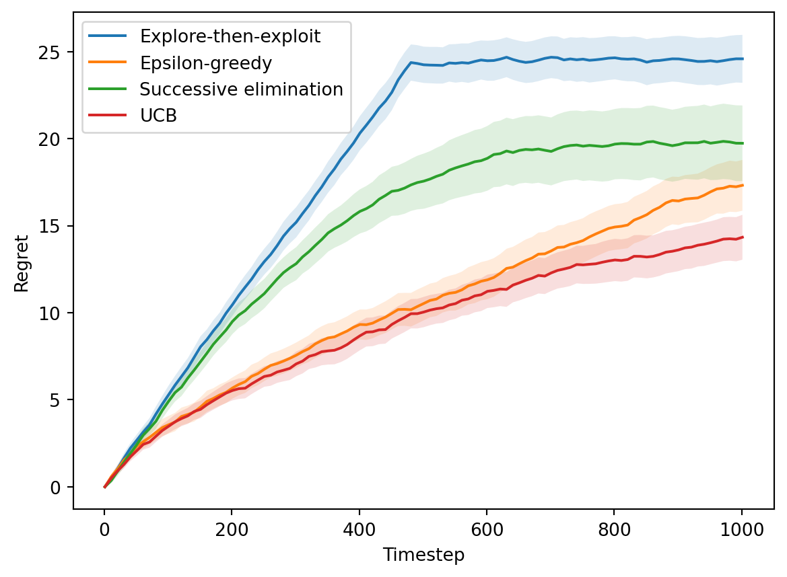

In which we introduce random variables and describe the theory behind bounding them via concentration inequalities. We then introduce several multi-armed bandit algorithms to see how such inequalities may be used to evaluate their performance.
Published
December 1, 2023
Random variables
You may remember them from your intro to statistics class. They’re less like a number and more like a distribution. Less like -1°C (the temperature here, now) and more like -3.7°C to 7.2°C (the daily mean temperature in Blacksburg in December). Less like a particular experiment outcome and more like the experiment itself. Basically, a number that isn’t fixed and can vary.
Pretty simple, right? Here’s the definition; taken from Wikipedia, which in order takes it from Fristedt and Gray (1996, 11).
Definition 1(Random variable). Let \((\Omega, \mathcal{F}, P)\) be a probability space and \((E, \mathcal{E})\) a measurable space. Then an \((E, \mathcal{E})\)-valued random variable is a measurable function \(X : \Omega \to E\), which measures that, for every subset \(B \in \mathcal{E}\), its preimage is \(\mathcal{F}\)-measurable; \(X^{-1}(B) \in \mathcal{F}\), where \(X^{-1}(B) = \{\omega : X(\omega) \in B\}\).
Uh… what? Let’s break this down a little.
Example
Let \(\Omega = \{😸,😿\}\) denote the outcomes of an experiment, with associated probabilities \(\mathrm{P}(😸) = 0.5\) and \(\mathrm{P}(😿) = 0.5\). What is the average outcome of this experiment? Certainly, it can’t be \(0.5😸 + 0.5😿\); that quantity doesn’t make sense. We instead need something we can count, such as the number of happy cats. This we can denote by a random variable\(X\), something that maps event outcomes in \(\Omega\) to measurable quantities in \(E\), which in this case is \(\{0, 1\}\). Let \(X(😸) = 1\) and \(X(😿) = 0\); then, to get the probability of a particular outcome in \(E\) we must find all entries in \(\Omega\) that map to it and sum their probabilities. This can be written as \[
\mathrm{P}(X = 1) = \mathrm{P}(\{ \omega \in \Omega : X(\omega) = 1 \}) = \mathrm{P}(😸) = 0.5\ ,
\tag{1}\]
and analogously for \(\mathrm{P}(X = 0) = \mathrm{P}(😿) = 0.5\). We can thus evaluate the expected value as \[
\mathbb{E}[X] = \sum_{x \in \Omega} x \mathrm{P}(X = x) = 0.5 \mathrm{P}(X = 😸) + 0.5 \mathrm{P}(X = 😿) = 0.5 \cdot 0 + 0.5 \cdot 1 = 0.5\ ,
\tag{2}\]
meaning that on average the experiment produces one half of a happy cat.
The reason for all the remaining clunkiness in the definition is that its formality stems from measure theory, a branch of probability theory that can deal with otherwise confusing situations like distributions that are part-discrete and part-continuous. For instance, we need to define \(\mathcal{F}\) and \(\mathcal{E}\) as collections of subsets of \(\Omega\) and \(E\) since we can’t map events and values to probabilities directly (continuous distributions would have zero probability), and must instead map sets. When calculating \(\mathbb{E}[X]\) we would then have to take the Lebesgue integral\(\int_\Omega X dP\).
One additional small note: we can arrange random variables \(X_1, \ldots, X_n\) in a vector to obtain a random vector\(X = \begin{bmatrix} X_1, \ldots, X_n \end{bmatrix}^\top\). The only mathematical caveat is that the variables must act on the same probability and measurable spaces.
Takeaway
In short, I think the best way to remember what random variables are, is by what they aren’t. Specifically, they are not random, and they are not variables. They don’t themselves serve as a source of randomness, instead only taking as an input the outcomes of an already random experiment. They do not vary; despite potentially giving different values upon being sampled, the mathematical object they describe is fixed. Although, given the context in which they typically appear, I can certainly see the appeal of the name.
Concentration bounds
Suppose we have a random variable \(X\) that is promised to give values in \([0,1]\). We may study such an \(X\) via its parameters, such as its expected value \(\mathbb{E}[X]\). While we may have access to that during mathematical analysis, in practice we typically have to rely on some data1\(\{X_i\}_{i=1}^n\) sampled from \(X\) to compute statistics such as the sample mean \(\frac{1}{n} \sum_{i=1}^n X_i\). But, do we know how accurate our approximations are? For instance, can we find some \(f\) such that \[
\Biggr \lvert \frac{1}{n} \sum_{i=1}^n X_i - \mathbb{E}[X] \Biggr \rvert < f(n)\ ?
\tag{3}\]
Hoeffding’s inequality
This famous inequality provides one such bound.
Theorem 1(Hoeffding’s inequality). Let \(X_1, \ldots, X_n\) be independent random variables where with probability \(1\), \(X_i \in [a_i, b_i]\) (i.e., bounded). Let \(R_i \coloneqq b_i - a_i\) be the range. Then for all \(\epsilon \geq 0\), \[
P \left( \Biggr \lvert \sum_{i=1}^n (X_i - \mathbb{E}[X_i]) \Biggr \rvert \leq \epsilon \right) \geq 2 \exp \left( -\frac{2 \epsilon^2}{\sum_{i=1}^n R_i^2} \right)\ .
\tag{4}\]
We can re-arrange the variables to obtain that for any fixed \(\delta \in (0, 1]\), with probability at least \(1 - \delta\), \[
\Biggr \lvert \sum_{i=1}^n (X_i - \mathbb{E}[X_i]) \Biggr \rvert \leq \sqrt{\frac{\sum_{i=1}^n R_i^2 \log(2/\delta)}{2}}\ .
\tag{5}\]
Application
The following example is provided by Ji (2022, Lecture 13):
Suppose you are given a coin that lands on heads with probability \(\mu\). Every time you flip it, you get an outcome \(X_i\) - a Bernoulli distribution with mean \(\mu\). After \(n\) flips, you compute the sample mean \(\hat{\mu}_n \coloneqq \frac{1}{n} \sum_{i=1}^n X_i\). By Hoeffding’s inequality, with probability at least \(1-\delta\), \[
| \hat{\mu}_n - \mu | \leq \sqrt{\frac{\log(2/\delta)}{2 n}}\ .
\tag{6}\]
You may recall that this is consistent with the central limit theorem, which states that the sampling distribution of sample means is \(\sigma_{\bar{X}} = \sigma / \sqrt{n}\).
Multi-armed bandits
I first encountered these through a graduate course I took with Dr. Bo Ji (2022); the algorithms and analyses below (as well as the concentration bounds discussion above) are all taken from lecture notes from that class, although they are originally based on a book by Slivkins (2022).
The image above shows a row of slot machines. They are otherwise known as one-armed bandits, as they steal money from you and have one arm you must pull to spin the wheel (although in the ones seen above it seems to have been replaced by buttons).
Generalizing a bit, let’s imagine that we instead have \(K\) such arms. Maybe they belong to the same, now much more tricky bandit. Or, maybe they model the possibility of playing different games in the same casino. In any case, at every time point \(t\) we must choose one such action \(a_t \in [K]\) to play, only learning information about its underlying distribution through the rewards we receive.
There are various possible types of the bandit setting, but here we will only consider stochastic (as opposed to adversarial) losses and multi-armed (as opposed to linear or Gaussian process) bandits.
\begin{algorithm} \caption{Stochastic MAB (Framework)} \begin{algorithmic} \Require{$K$ and $T$ (both known), unknown reward distributions $\mathcal{D}_a$.} \For{$t = 1, 2, \ldots$} \State Choose an action $a_t \in [K]$. \State Suffer loss $z_t[a_t]$ and also only observe $z_t[a_t]$. \EndFor \end{algorithmic} \end{algorithm}
Here, \(z_t\) is a random vector sampled from the unknown distributions, i.e., \(z_t[a] \sim \mathcal{D}_a\). The defining feature separating this problem from Online Convex Optimization is being only provided one value \(z_t[a_t]\) corresponding to the played arm \(a_t\), a.k.a., bandit feedback.
Our goal in this setting is to design an algorithm fitting this framework that minimizes the following quantity, known as regret \[
\mathcal{R}_T = \sum_{t=1}^T z_t[a_t] - \min_i \sum_{t=1}^T z_t[i]\ .
\tag{7}\]
Such a definition makes regret a useful metric in many situations, even when experiencing persistent penalties or unreasonable adversaries. In particular, it evaluates performance against the best possible fixed action in hindsight - a value that will compensate for the above scenarios. Note that the definition given in Equation 7 makes \(\mathcal{R}_T\) a random variable, meaning that in practice we aim to bound \(\mathbb{E}[\mathcal{R}_T]\), the expected regret.2
We may use the terms loss and reward interchangeably, as they can be thought of as negatives of each other. This is again owed to the definition of regret in Equation 7, by which minimizing losses is the same as maximizing rewards.
Explore-then-exploit
A central issue in the multi-armed bandit problem is that of exploration versus exploitation - whether to prioritize investigating the yet unknown, or to take advantage of information already learned. It is not a coincidence this problem appears both here and in reinforcement learning - both fall within the realm of online learning (when decisions and information are processed sequentially), the only thing separating them is the addition of states.
We start with a simple algorithm that does the two stages separately (Ji 2022, Lecture 14).
\begin{algorithm} \caption{Explore-then-exploit} \begin{algorithmic} \Require{$K$ and $T$ (both known), unknown reward distributions $\mathcal{D}_a$.} \For{$t = 1, 2, \ldots$} \State Explore phase: try each arm $N$ times. \State Exploit phase: determine $\tilde{a}$ with the highest average reward; then play $\tilde{a}$ in all remaining rounds. \EndFor \end{algorithmic} \end{algorithm}
We wish to bound the probability of getting good approximations on all arms, which we start by bounding each arm individually. That is, we want to bound the deviation of its true mean \(\mu(a)\) from its approximation \(\hat{\mu}(a)\) after that arm has been pulled \(N\) times. Let \(\beta_N = \sqrt{\frac{2 \log T}{N}}\), by Hoeffding’s inequality, \[
\mathrm{P}(|\hat{\mu}(a) - \mu(a)| \leq \beta_N) \geq 1 - 2 / T^4\ .
\tag{8}\]
We define a good event\(\mathcal{E}\) as the above being true for all arms, meaning that by the union bound \[
\mathrm{P}(\mathcal{E}) = 1 - \mathrm{P}(\bar{\mathcal{E}}) \geq
1 - \sum_{a=1}^K \mathrm{P}(|\bar{\mu}(a) - \mu(a)| \geq \beta_N) \geq 1 - 2 K / T^4\ .
\tag{9}\]
Even if this good event occurs, we may still choose a suboptimal arm \(\bar{a}\) in the exploit phase. In that case, the estimate errors for both \(\bar{a}\) and the optimal arm \(a^*\) are bounded by \(\beta_N\). As such, \(\mu(a^*) - \mu(\bar{a}) \leq 2 \beta_N\). Adding with a max regret of \(1\) for \(KN\) round of exploration, the total incurred regret in the good case is at most \[
\mathcal{R}_T \leq K N + (T - KN) \cdot 2 \beta_N \leq KN + 2 T \beta_N = KN + 2 T \sqrt{\frac{2 \log T}{N}}\ .
\tag{10}\]
This also lets us derive a formula for \(N\) which we do by setting the resulting terms equal. In particular, \(N = 2 \sqrt[3]{T^2 \log T / K^2}\), which leads to a good case regret of \(\mathrm{O}(T^{2/3} (K \log T)^{1/3})\). The bad event happens with probability at most \(2 K / T^4\), which when multiplied by a max per-round regret of \(1\) gets absorbed by the big O.
For implementations of this and the following algorithms, we make a function play that returns an arm a, and a function feedback that records the resulting reward r. Both functions are supplied with other contextual parameters for convenience.
Code for Explore-then-exploit
from math import logfrom numpy import argmaxclass ExploreExploit:def__init__(self, K, T):self.K = Kself.N =round(2* (T**2* log(T) / K**2)**(1/3))self.totals = [0] * Kdef__str__(self):return"Explore-then-exploit"def play(self, t):'''Choose an arm to play.'''if t <=self.K*self.N:# Play each arm N timesreturn t %self.Kelse:# Play best armreturnself.bestdef feedback(self, t, a, r):'''Receive a reward.'''if t <=self.K*self.N:# Record rewardself.totals[a] += rif t ==self.K*self.N:# Compute best armself.best = argmax(self.totals)
Epsilon-greedy
Instead of doing exploration all at once, we may spread it out over all rounds, making it less frequent over time (Ji 2022, Lecture 14). You’ll see this strategy used quite frequently in reinforcement learning, as it is pretty simple to implement.
\begin{algorithm} \caption{Epsilon-greedy} \begin{algorithmic} \Require{$K$ and $T$ (both known), unknown reward distributions $\mathcal{D}_a$.} \For{$t = 1, 2, \ldots$} \State Toss a coin with success rate $\epsilon_t$. \If{success} \State Explore: choose an arm uniformly at random. \Else \State Exploit: choose an arm with the highest average reward so far. \EndIf \EndFor \end{algorithmic} \end{algorithm}
With \(\epsilon_t = t^{-1/3} (K \log t)^{1/3}\), Epsilon-greedy achieves the same regret bound, \(\mathrm{O}(t^{2/3} (K \log t)^{1/3})\). We won’t show it here for brevity, but it uses the same techniques as shown, similarly relying on Hoeffding’s inequality. Note in addition that Algorithm 3 does not rely on \(T\), which makes it an anytime algorithm.
Code for Epsilon-greedy
from math import logfrom random import random, randrangefrom numpy import argmax, divide, errstate, inf, nanclass EpsilonGreedy:def__init__(self, K, _):self.K = Kself.totals = [0] * Kself.counts = [0] * Kdef__str__(self):return"Epsilon-greedy"def _eps(self, t):return (self.K*log(t)/t)**(1/3)def _best(self):with errstate(divide='ignore', invalid='ignore'): avg = divide(self.totals, self.counts) avg[avg == inf] =-inf avg[avg == nan] =-infreturn argmax(avg)def play(self, t):'''Choose an arm to play.'''if random() <self._eps(t):# Play random armreturn randrange(self.K)else:# Play best armreturnself._best()def feedback(self, t, a, r):'''Receive a reward.'''self.totals[a] += rself.counts[a] +=1
Successive elimination
We can further incorporate the concept of means and confidence bounds into the algorithm by considering their values at any \(t \in [T]\). In particular, \[
\mathrm{P} \left( |\hat{\mu}_t(a) - \mu(a)| \leq \beta_t(a) \right) \geq \sqrt{\frac{\log (2 K T / \delta)}{2 N_t (a)}}\ .
\tag{11}\]
This feels very similar to Hoeffding’s inequality, but actually requires a version generalized to martingales, known as the Azuma-Hoeffding inequality.
\begin{algorithm} \caption{Successive Elimination} \begin{algorithmic} \Require{$K$ and $T$ (both known), unknown reward distributions $\mathcal{D}_a$.} \State Initialize active arm set $\mathcal{A}_1 = [K]$. \For{$p = 1, 2, \ldots$} \State Play each arm in $\mathcal{A}_p$ once. \State Let $t$ be the time at the end of the current phase $p$. \State $\mathcal{A}_{p+1} = \{ a \in \mathcal{A}_p : \mathrm{UCB}_t (a) \geq \max_{a' \in \mathcal{A}_p} \mathrm{LCB}_t (a) \}$ \EndFor \end{algorithmic} \end{algorithm}
We define the good event as before, and assume that it holds. If we at some point eliminate \(a^*\), it means \(\mathrm{UCB}_t(a^*) < \mathrm{LCB}_t(a')\) for some other arm \(a'\), implying \(\mu(a^*) < \mu(a')\) and thus a contradiction. Then, assume there is some arm \(a \in \mathcal{A}_{p+1}\) during phase \(p\) ending at time \(t\) such that \(\mu(a^*) - \mu(a) > 4 \beta_t(a)\). Then, \[
\mathrm{LCB}_t(a) \leq \mu(a) + 2 \beta_t(a) < \mu(a^*) - 2 \beta_t(a^*) \leq \mathrm{UCB}_t(a^*)\ ,
\tag{13}\] implying that this arm should have been eliminated. Thus, the regret contributed by arm \(a\) is \[
\mathcal{R}_{a,t} \leq 4 N_t(a) \sqrt{\frac{\log(2 K T / \delta)}{2 N_t(a)}} = \mathrm{O}(\sqrt{N_t(a) \log(K T / \delta)})\ .
\tag{14}\]
Using the Cauchy-Schwarz inequality, \(\sum_a \sqrt{N_t(a)} \leq \sqrt{\sum_a N_t (a) \cdot \sum_a 1} = \sqrt{t K}\), meaning \[
\mathcal{R}_t = \sum_{a \in [K]} \mathcal{R}_{a,t} = \mathrm{O}(\sqrt{\log(K T / \delta)}) \cdot \sum_a \sqrt{N_t(a)} \leq \mathrm{O}(\sqrt{K t \log (K T / \delta)})\ .
\tag{15}\]
We thus have that \(\mathcal{R}_T = \mathrm{O}(\sqrt{K T \log (K T / \delta)})\).
Note that the above bounds have a configurable value \(\delta \in (0, 1]\), which makes them take effect with probability at least \(1 - \delta\). In practice, we need to set delta to a ridiculously high value for any arms to actually become eliminated within a reasonable amount of time.
Code for Successive elimination
from random import random, randrangefrom numpy import argmax, divide, errstate, inf, nan, log, sqrtimport numpy as npclass SuccessiveElimination:def__init__(self, K, T, delta=1500):self.num = log(2* K * T / delta) /2assertself.num >0, "delta too large"self.totals = [0] * Kself.counts = [0] * Kself.A =list(range(K))self.idx =0def__str__(self):return"Successive elimination"def _mu(self):with errstate(divide='ignore', invalid='ignore'): mu = divide(self.totals, self.counts) mu[mu == inf] =0 mu[mu == nan] =0return mudef _beta(self):with errstate(divide='ignore'): beta = sqrt(divide(self.num, self.counts))return betadef play(self, t):'''Choose an arm to play.'''ifself.idx ==len(self.A):# Update arm set A u, b =self._mu(), self._beta() lcb, ucb = u-b, u+bself.A = [a for a inself.A if ucb[a] >= np.max(lcb)]self.idx =0# Play each arm in A a =self.A[self.idx]self.idx +=1return adef feedback(self, t, a, r):'''Receive a reward.'''self.totals[a] += rself.counts[a] +=1
UCB
Since the event of eliminating an arm may be quite rare, we may instead just sample the arm with the highest \(\mathrm{UCB}_t(a)\). This strategy demonstrates a principle known as optimism in the face of uncertainty(Ji 2022, Lecture 15) - that is, both arms that have high sample mean and arms with fewer samples will have a larger UCB and thus more likely to get chosen.
Similar to before, \(\mu(a^*) - \mu(a_t) \leq 2 \beta_t (a_t)\) in the good event. We thus have \[
\mathcal{R}_T = \sum_{t=1}^T r_t \leq c \sqrt{\log (2 K T / \delta)} \sum_{t=1}^T \sqrt{\frac{1}{N_t(a_t)}}\ ,
\tag{16}\]
where the latter summation is bounded by \[
\sum_{t=1}^T \sqrt{\frac{1}{N_t(a_t)}} = \sum_{a=1}^K \sum_{m=1}^{N_T(a)} \sqrt{1/m} \leq c' \sum_{a=1}^K \sqrt{N_T(a)} = \mathrm{O}(\sqrt{K T})\ .
\tag{17}\]
Thus, the regret of UCB is \(\mathrm{O}(\sqrt{K T \log (K T / \delta)})\).
Code for UCB
from random import random, randrangefrom numpy import argmax, divide, errstate, inf, nan, log, sqrtimport numpy as npclass UCB:def__init__(self, K, T, delta=1):self.num = log(2* K * T / delta) /2assertself.num >0, "delta too large"self.totals = [0] * Kself.counts = [0] * Kdef__str__(self):return"UCB"def _mu(self):with errstate(divide='ignore', invalid='ignore'): mu = divide(self.totals, self.counts) mu[mu == inf] =0 mu[mu == nan] =0return mudef _beta(self):with errstate(divide='ignore'): beta = sqrt(divide(self.num, self.counts))return betadef play(self, t):'''Choose an arm to play.''' ucb =self._mu() +self._beta()return argmax(ucb)def feedback(self, t, a, r):'''Receive a reward.'''self.totals[a] += rself.counts[a] +=1
Summary
Here is a compilation of the derived bounds so far:
On a final note, the above bounds are all problem-independent. We can instead derive problem-dependent bounds, such as \[
\mathcal{R}_T = \sum_{a : \Delta(a) > 0} \mathrm{O} \left( \frac{\log(K T / \delta)}{\delta(a)} \right)\ ,
\tag{18}\]
for UCB, where \(\Delta(a) \coloneqq \mu(a^*) - \mu(a)\).
Simulation
Now, it’s time to put the algorithms to the test!
Technical note
But first, a small note on the simulation details. As the rewards (and thus performance) are highly stochastic, we will need to run many trials to get an accurate result. Even when results are recorded once every F steps, we still run into situations where the times for storing and churning data may compete with those of running the algorithms. We have several possible approaches:
Store them all: pre-allocate a huge array, and process it once afterwards. This understandably causes slowdowns.
Aggregate last: i.e., iterate over algorithms and timesteps first, then trials. This may seem like a perfect solution at first, but it runs into a caveat of the algorithms storing internal parameters. That is, algorithms from some runs will have more information about certain arms than others, so we can’t just re-sample the same instance many times. The way to address this would involve storing an array of algorithms proportional to the number of trials, which is again inefficient.
Online aggregation: iterate over trials first, and store a statistic for each algorithm/timestep. The way we avoid having a separate dimension for trials is via an approximation algorithm that aggregates statistics as they come in - Welford’s online algorithm.
We will use the latter approach, which is what lets us compute 1000 samples for each data point.
Seed random number generators
from random import seed as py_seedfrom numpy.random import seed as np_seedpy_seed(5805)np_seed(5805)
In particular, we will simulate having to choose between \(K=2\) arms:
A uniform distribution on \([0,1]\), i.e., mean \(0.5\) and standard deviation \(\sqrt{1/12} \approx 0.29\).
A normal distribution with mean \(0.6\) and standard deviation \(0.2\).
The above statistics indicate that arm 2 is more optimal, but arm 1 has a wider distribution of rewards.
Simulation code
from random import randomfrom numpy.random import normalfrom numpy import zeros, sqrt# Simulation parametersT =1000# Number of roundsF =10# Logging frequencyN =1000# Number of trials# Arms to exploremeans = [0.5, 0.6]best =max(means)arms = [random, lambda: normal(means[1], 0.2, 1).item()]K =len(arms)# Algorithms to usecs = [ExploreExploit, EpsilonGreedy, SuccessiveElimination, UCB]A =len(cs)# Evaluate algorithmsx = zeros((T//F+1, A))s = zeros((T//F+1, A))for n inrange(1, N+1):for i, c inenumerate(cs): alg = c(K, T) rgt =0for t inrange(1, T+1): a = alg.play(t) r = arms[a]() alg.feedback(t, a, r) rgt += best - rif t % F ==0:# Welford's online algorithm xn1 = x[t//F, i] x[t//F, i] = ((n-1)*xn1 + rgt) / n s[t//F, i] += (rgt - xn1) * (rgt - x[t//F, i])s =0.2*sqrt(s / (N-1))
We now plot the mean regret \(\mathcal{R}_t\) of each algorithm, as well as the \(\pm 0.2\) sample standard deviation margins.
Code for plotting regret
import numpy as npimport matplotlib.pyplot as pltt = np.arange(1, T+2, F)plt.plot(t, x)for i inrange(A): plt.fill_between(t, x[:,i]-s[:,i], x[:,i]+s[:,i], alpha=.15)plt.xlabel("Timestep")plt.ylabel("Regret")plt.legend([c(K, T) for c in cs]);

Figure 1: Performance of MAB algorithms
The above performance roughly matches what we should expect. Most notably, Explore-then-exploit accumulates linear regret until a certain time, where it sharply switches to exploitation and plateus. The other algorithms gently bend down towards it instead, allowing them to achieve lower final regrets.
Note that the above shouldn’t be used as a definitive guide for how the algorithms compare, as it’s specific to the problem instance and algorithm parameters. In particular, the performance of Successive elimination is highly dependent on its artificial parameter \(\delta = 1500\), as it determines how soon the trend starts bending toward a plateu. Still, it may give an indication as to why the UCB algorithm and its variants are so common in practice.
References
Fristedt, Bert E., and Lawrence F. Gray. 1996. A ModernApproach to ProbabilityTheory. Springer Science & Business Media.
Ji, Bo. 2022. “Online Learning and SequentialDecisionMaking.” CS6104 Advanced Topics in Theory of Computation.
These \(X_i\) can either be thought of as fixed values or i.i.d. random variables. In coming examples, we will use the latter.↩︎
In practice, it often ends up more convenient to bound the pseudo-regret\(\bar{\mathcal{R}}_T\), which swaps the order of \(\mathbb{E}\) and \(\min\), turning it into a \(\max\). By Jensen’s inequality, \(\mathbb{E}[\mathcal{R}_T] \geq \bar{\mathcal{R}}_T\).↩︎
Source Code
---title: Probability theory and random variablessubtitle: Concentration bounds and multi-armed banditsdescription: In which we introduce random variables and describe the theory behind bounding them via concentration inequalities. We then introduce several multi-armed bandit algorithms to see how such inequalities may be used to evaluate their performance.date: 2023/12/01categories: - Probability theory - Random variables - Concentration inequalities - Multi-armed bandits - Online learningbibliography: blog.bibfilters: - pseudocode---<!-- Describe the probability theory and random variables. -->## Random variablesYou may remember them from your intro to statistics class.They're less like a number and more like a distribution.Less like -1°C (the temperature here, now) and more like -3.7°C to 7.2°C (the daily mean temperature in Blacksburg in December).Less like a particular experiment outcome and more like the experiment itself.Basically, a number that isn't fixed and can vary.Pretty simple, right?Here's the definition; taken from [Wikipedia](https://en.wikipedia.org/wiki/Random_variable#Measure-theoretic_definition), which in order takes it from @fristedt_modern_1996 [page 11].::: {#def-rv}**(Random variable).**Let $(\Omega, \mathcal{F}, P)$ be a [probability space](https://en.wikipedia.org/wiki/Probability_space) and $(E, \mathcal{E})$ a [measurable space](https://en.wikipedia.org/wiki/Measurable_space).Then an $(E, \mathcal{E})$**-valued random variable** is a measurable function $X : \Omega \to E$, which measures that, for every subset $B \in \mathcal{E}$, its [preimage](https://en.wikipedia.org/wiki/Preimage) is $\mathcal{F}$-measurable; $X^{-1}(B) \in \mathcal{F}$, where $X^{-1}(B) = \{\omega : X(\omega) \in B\}$.:::Uh... what?Let's break this down a little.### ExampleLet $\Omega = \{😸,😿\}$ denote the outcomes of an experiment, with associated probabilities $\mathrm{P}(😸) = 0.5$ and $\mathrm{P}(😿) = 0.5$.What is the average outcome of this experiment?Certainly, it can't be $0.5😸 + 0.5😿$; that quantity doesn't make sense.We instead need something we can *count*, such as the *number of happy cats*.This we can denote by a **random variable** $X$, something that maps event outcomes in $\Omega$ to measurable quantities in $E$, which in this case is $\{0, 1\}$.Let $X(😸) = 1$ and $X(😿) = 0$; then, to get the probability of a particular outcome in $E$ we must find all entries in $\Omega$ that map to it and sum their probabilities.This can be written as$$\mathrm{P}(X = 1) = \mathrm{P}(\{ \omega \in \Omega : X(\omega) = 1 \}) = \mathrm{P}(😸) = 0.5\ ,$$ {#eq-rv-example}and analogously for $\mathrm{P}(X = 0) = \mathrm{P}(😿) = 0.5$.We can thus evaluate the *expected value* as$$\mathbb{E}[X] = \sum_{x \in \Omega} x \mathrm{P}(X = x) = 0.5 \mathrm{P}(X = 😸) + 0.5 \mathrm{P}(X = 😿) = 0.5 \cdot 0 + 0.5 \cdot 1 = 0.5\ ,$$ {#eq-rv-expected}meaning that on average the experiment produces one half of a happy cat.The reason for all the remaining clunkiness in the definition is that its formality stems from [measure theory](https://en.wikipedia.org/wiki/Measure_(mathematics)), a branch of probability theory that can deal with otherwise confusing situations like distributions that are part-discrete and part-continuous.For instance, we need to define $\mathcal{F}$ and $\mathcal{E}$ as collections of subsets of $\Omega$ and $E$ since we can't map events and values to probabilities directly (continuous distributions would have zero probability), and must instead map sets.When calculating $\mathbb{E}[X]$ we would then have to take the [Lebesgue integral](https://en.wikipedia.org/wiki/Lebesgue_integration) $\int_\Omega X dP$.One additional small note: we can arrange random variables $X_1, \ldots, X_n$ in a vector to obtain a **random vector** $X = \begin{bmatrix} X_1, \ldots, X_n \end{bmatrix}^\top$.The only mathematical caveat is that the variables must act on the same probability and measurable spaces.### TakeawayIn short, I think the best way to remember what random variables are, is by what they *aren't*.Specifically, they are not random, and they are not variables.They don't themselves serve as a source of randomness, instead only taking as an input the outcomes of an already random experiment.They do not vary; despite potentially giving different values upon being sampled, the mathematical object they describe is fixed.Although, given the context in which they typically appear, I can certainly see the appeal of the name.## Concentration boundsSuppose we have a random variable $X$ that is promised to give values in $[0,1]$.We may study such an $X$ via its parameters, such as its expected value $\mathbb{E}[X]$.While we may have access to that during mathematical analysis, in practice we typically have to rely on some data[^rv] $\{X_i\}_{i=1}^n$ sampled from $X$ to compute statistics such as the sample mean $\frac{1}{n} \sum_{i=1}^n X_i$.But, do we know how accurate our approximations are?For instance, can we find some $f$ such that$$\Biggr \lvert \frac{1}{n} \sum_{i=1}^n X_i - \mathbb{E}[X] \Biggr \rvert < f(n)\ ?$$ {#eq-bound}[^rv]: These $X_i$ can either be thought of as fixed values or i.i.d. random variables. In coming examples, we will use the latter.### Hoeffding's inequalityThis famous inequality provides one such bound.::: {#thm-hoeffding}**(Hoeffding's inequality).**Let $X_1, \ldots, X_n$ be independent random variables where with probability $1$, $X_i \in [a_i, b_i]$ (i.e., bounded).Let $R_i \coloneqq b_i - a_i$ be the range.Then for all $\epsilon \geq 0$,$$P \left( \Biggr \lvert \sum_{i=1}^n (X_i - \mathbb{E}[X_i]) \Biggr \rvert \leq \epsilon \right) \geq 2 \exp \left( -\frac{2 \epsilon^2}{\sum_{i=1}^n R_i^2} \right)\ .$$ {#eq-hoeffding}:::We can re-arrange the variables to obtain that for any fixed $\delta \in (0, 1]$, with probability at least $1 - \delta$,$$\Biggr \lvert \sum_{i=1}^n (X_i - \mathbb{E}[X_i]) \Biggr \rvert \leq \sqrt{\frac{\sum_{i=1}^n R_i^2 \log(2/\delta)}{2}}\ .$$ {#eq-hoeffding-alt}### ApplicationThe following example is provided by @ji_online_2022 [Lecture 13]:Suppose you are given a coin that lands on heads with probability $\mu$.Every time you flip it, you get an outcome $X_i$ - a Bernoulli distribution with mean $\mu$.After $n$ flips, you compute the sample mean $\hat{\mu}_n \coloneqq \frac{1}{n} \sum_{i=1}^n X_i$.By [Hoeffding's inequality](#thm-hoeffding), with probability at least $1-\delta$,$$| \hat{\mu}_n - \mu | \leq \sqrt{\frac{\log(2/\delta)}{2 n}}\ .$$ {#eq-coin1}You may recall that this is consistent with the [central limit theorem](https://en.wikipedia.org/wiki/Central_limit_theorem), which states that the sampling distribution of sample means is $\sigma_{\bar{X}} = \sigma / \sqrt{n}$.## Multi-armed banditsI first encountered these through a graduate course I took with Dr. Bo @ji_online_2022; the algorithms and analyses below (as well as the [concentration bounds](#concentration-bounds) discussion above) are all taken from lecture notes from that class, although they are originally based on a book by @slivkins_introduction_2022..](https://upload.wikimedia.org/wikipedia/commons/8/82/Las_Vegas_slot_machines.jpg){width=50%}The image above shows a row of slot machines.They are otherwise known as one-armed bandits, as they steal money from you and have one arm you must pull to spin the wheel (although in the ones seen above it seems to have been replaced by buttons).Generalizing a bit, let's imagine that we instead have $K$ such arms.Maybe they belong to the same, now much more tricky bandit.Or, maybe they model the possibility of playing different games in the same casino.In any case, at every time point $t$ we must choose one such action $a_t \in [K]$ to play, only learning information about its underlying distribution through the rewards we receive.There are various possible types of the bandit setting, but here we will only consider **stochastic** (as opposed to adversarial) losses and **multi-armed** (as opposed to linear or Gaussian process) bandits.```pseudocode#| label: alg-mab#| html-indent-size: "1.8em"#| html-comment-delimiter: "//"#| html-line-number: true#| html-no-end: false#| pdf-placement: "htb!"#| pdf-line-&number: true\begin{algorithm}\caption{Stochastic MAB (Framework)}\begin{algorithmic}\Require{$K$ and $T$ (both known), unknown reward distributions $\mathcal{D}_a$.}\For{$t = 1, 2, \ldots$} \State Choose an action $a_t \in [K]$. \State Suffer loss $z_t[a_t]$ and also only observe $z_t[a_t]$.\EndFor\end{algorithmic}\end{algorithm}```Here, $z_t$ is a random vector sampled from the unknown distributions, i.e., $z_t[a] \sim \mathcal{D}_a$.The defining feature separating this problem from Online Convex Optimization is being only provided one value $z_t[a_t]$ corresponding to the played arm $a_t$, a.k.a., **bandit feedback**.Our goal in this setting is to design an algorithm fitting this framework that minimizes the following quantity, known as regret$$\mathcal{R}_T = \sum_{t=1}^T z_t[a_t] - \min_i \sum_{t=1}^T z_t[i]\ .$$ {#eq-regret}Such a definition makes regret a useful metric in many situations, even when experiencing persistent penalties or unreasonable adversaries.In particular, it evaluates performance against the best possible fixed action in hindsight - a value that will compensate for the above scenarios.Note that the definition given in @eq-regret makes $\mathcal{R}_T$ a [random variable](#random-variables), meaning that in practice we aim to bound $\mathbb{E}[\mathcal{R}_T]$, the expected regret.[^pseudo][^pseudo]: In practice, it often ends up more convenient to bound the *pseudo-regret* $\bar{\mathcal{R}}_T$, which swaps the order of $\mathbb{E}$ and $\min$, turning it into a $\max$.By Jensen's inequality, $\mathbb{E}[\mathcal{R}_T] \geq \bar{\mathcal{R}}_T$.We may use the terms loss and reward interchangeably, as they can be thought of as negatives of each other.This is again owed to the definition of regret in @eq-regret, by which minimizing losses is the same as maximizing rewards.### Explore-then-exploitA central issue in the multi-armed bandit problem is that of **exploration versus exploitation** - whether to prioritize investigating the yet unknown, or to take advantage of information already learned.It is not a coincidence this problem appears both here and in **reinforcement learning** - both fall within the realm of **online learning** (when decisions and information are processed sequentially), the only thing separating them is the addition of states.We start with a simple algorithm that does the two stages separately [@ji_online_2022, Lecture 14].```pseudocode#| label: alg-explore-exploit#| html-indent-size: "1.8em"#| html-comment-delimiter: "//"#| html-line-number: true#| html-no-end: false#| pdf-placement: "htb!"#| pdf-line-&number: true\begin{algorithm}\caption{Explore-then-exploit}\begin{algorithmic}\Require{$K$ and $T$ (both known), unknown reward distributions $\mathcal{D}_a$.}\For{$t = 1, 2, \ldots$} \State Explore phase: try each arm $N$ times. \State Exploit phase: determine $\tilde{a}$ with the highest average reward; then play $\tilde{a}$ in all remaining rounds.\EndFor\end{algorithmic}\end{algorithm}```We wish to bound the probability of getting good approximations on all arms, which we start by bounding each arm individually.That is, we want to bound the deviation of its true mean $\mu(a)$ from its approximation $\hat{\mu}(a)$ after that arm has been pulled $N$ times.Let $\beta_N = \sqrt{\frac{2 \log T}{N}}$, by [Hoeffding's inequality](#thm-hoeffding),$$\mathrm{P}(|\hat{\mu}(a) - \mu(a)| \leq \beta_N) \geq 1 - 2 / T^4\ .$$ {#eq-exp-arm}We define a *good event* $\mathcal{E}$ as the above being true for all arms, meaning that by the union bound$$\mathrm{P}(\mathcal{E}) = 1 - \mathrm{P}(\bar{\mathcal{E}}) \geq1 - \sum_{a=1}^K \mathrm{P}(|\bar{\mu}(a) - \mu(a)| \geq \beta_N) \geq 1 - 2 K / T^4\ .$$ {#eq-exp-good}Even if this good event occurs, we may still choose a suboptimal arm $\bar{a}$ in the exploit phase.In that case, the estimate errors for both $\bar{a}$ and the optimal arm $a^*$ are bounded by $\beta_N$.As such, $\mu(a^*) - \mu(\bar{a}) \leq 2 \beta_N$.Adding with a max regret of $1$ for $KN$ round of exploration, the total incurred regret in the good case is at most $$\mathcal{R}_T \leq K N + (T - KN) \cdot 2 \beta_N \leq KN + 2 T \beta_N = KN + 2 T \sqrt{\frac{2 \log T}{N}}\ .$$ {#eq-exp-regret-good}This also lets us derive a formula for $N$ which we do by setting the resulting terms equal.In particular, $N = 2 \sqrt[3]{T^2 \log T / K^2}$, which leads to a good case regret of $\mathrm{O}(T^{2/3} (K \log T)^{1/3})$.The bad event happens with probability at most $2 K / T^4$, which when multiplied by a max per-round regret of $1$ gets absorbed by the big O.For implementations of this and the following algorithms, we make a function `play` that returns an arm `a`, and a function `feedback` that records the resulting reward `r`.Both functions are supplied with other contextual parameters for convenience.```{python}#| code-summary: Code for Explore-then-exploitfrom math import logfrom numpy import argmaxclass ExploreExploit:def__init__(self, K, T):self.K = Kself.N =round(2* (T**2* log(T) / K**2)**(1/3))self.totals = [0] * Kdef__str__(self):return"Explore-then-exploit"def play(self, t):'''Choose an arm to play.'''if t <=self.K*self.N:# Play each arm N timesreturn t %self.Kelse:# Play best armreturnself.bestdef feedback(self, t, a, r):'''Receive a reward.'''if t <=self.K*self.N:# Record rewardself.totals[a] += rif t ==self.K*self.N:# Compute best armself.best = argmax(self.totals)```### Epsilon-greedyInstead of doing exploration all at once, we may spread it out over all rounds, making it less frequent over time [@ji_online_2022, Lecture 14].You'll see this strategy used quite frequently in reinforcement learning, as it is pretty simple to implement.```pseudocode#| label: alg-epsilon-greedy#| html-indent-size: "1.8em"#| html-comment-delimiter: "//"#| html-line-number: true#| html-no-end: false#| pdf-placement: "htb!"#| pdf-line-&number: true\begin{algorithm}\caption{Epsilon-greedy}\begin{algorithmic}\Require{$K$ and $T$ (both known), unknown reward distributions $\mathcal{D}_a$.}\For{$t = 1, 2, \ldots$} \State Toss a coin with success rate $\epsilon_t$. \If{success} \State Explore: choose an arm uniformly at random. \Else \State Exploit: choose an arm with the highest average reward so far. \EndIf\EndFor\end{algorithmic}\end{algorithm}```With $\epsilon_t = t^{-1/3} (K \log t)^{1/3}$, Epsilon-greedy achieves the same regret bound, $\mathrm{O}(t^{2/3} (K \log t)^{1/3})$.We won't show it here for brevity, but it uses the same techniques as shown, similarly relying on [Hoeffding's inequality](#thm-hoeffding).Note in addition that @alg-epsilon-greedy does not rely on $T$, which makes it an **anytime** algorithm.```{python}#| code-summary: Code for Epsilon-greedyfrom math import logfrom random import random, randrangefrom numpy import argmax, divide, errstate, inf, nanclass EpsilonGreedy:def__init__(self, K, _):self.K = Kself.totals = [0] * Kself.counts = [0] * Kdef__str__(self):return"Epsilon-greedy"def _eps(self, t):return (self.K*log(t)/t)**(1/3)def _best(self):with errstate(divide='ignore', invalid='ignore'): avg = divide(self.totals, self.counts) avg[avg == inf] =-inf avg[avg == nan] =-infreturn argmax(avg)def play(self, t):'''Choose an arm to play.'''if random() <self._eps(t):# Play random armreturn randrange(self.K)else:# Play best armreturnself._best()def feedback(self, t, a, r):'''Receive a reward.'''self.totals[a] += rself.counts[a] +=1```### Successive eliminationWe can further incorporate the concept of means and confidence bounds into the algorithm by considering their values at any $t \in [T]$.In particular,$$\mathrm{P} \left( |\hat{\mu}_t(a) - \mu(a)| \leq \beta_t(a) \right) \geq \sqrt{\frac{\log (2 K T / \delta)}{2 N_t (a)}}\ .$$ {#eq-azuma}This feels very similar to Hoeffding's inequality, but actually requires a version generalized to [martingales](https://en.wikipedia.org/wiki/Martingale_(probability_theory)), known as the [Azuma-Hoeffding inequality](https://en.wikipedia.org/wiki/Azuma%27s_inequality).For convenience, we define [@ji_online_2022, Lecture 14]$$\begin{align} \mathrm{UCB}_t(a) &= \hat{\mu}_t(a) + \beta_t(a)\ ,\\ \mathrm{LCB}_t(a) &= \hat{\mu}_t(a) - \beta_t(a)\ .\end{align}$$ {#eq-ucb}```pseudocode#| label: alg-elimination#| html-indent-size: "1.8em"#| html-comment-delimiter: "//"#| html-line-number: true#| html-no-end: false#| pdf-placement: "htb!"#| pdf-line-&number: true\begin{algorithm}\caption{Successive Elimination}\begin{algorithmic}\Require{$K$ and $T$ (both known), unknown reward distributions $\mathcal{D}_a$.}\State Initialize active arm set $\mathcal{A}_1 = [K]$.\For{$p = 1, 2, \ldots$} \State Play each arm in $\mathcal{A}_p$ once. \State Let $t$ be the time at the end of the current phase $p$. \State $\mathcal{A}_{p+1} = \{ a \in \mathcal{A}_p : \mathrm{UCB}_t (a) \geq \max_{a' \in \mathcal{A}_p} \mathrm{LCB}_t (a) \}$\EndFor\end{algorithmic}\end{algorithm}```We define the good event as before, and assume that it holds.If we at some point eliminate $a^*$, it means $\mathrm{UCB}_t(a^*) < \mathrm{LCB}_t(a')$ for some other arm $a'$, implying $\mu(a^*) < \mu(a')$ and thus a contradiction.Then, assume there is some arm $a \in \mathcal{A}_{p+1}$ during phase $p$ ending at time $t$ such that $\mu(a^*) - \mu(a) > 4 \beta_t(a)$.Then,$$\mathrm{LCB}_t(a) \leq \mu(a) + 2 \beta_t(a) < \mu(a^*) - 2 \beta_t(a^*) \leq \mathrm{UCB}_t(a^*)\ ,$$ {#eq-elimination1}implying that this arm should have been eliminated.Thus, the regret contributed by arm $a$ is$$\mathcal{R}_{a,t} \leq 4 N_t(a) \sqrt{\frac{\log(2 K T / \delta)}{2 N_t(a)}} = \mathrm{O}(\sqrt{N_t(a) \log(K T / \delta)})\ .$$ {#eq-elimination2}Using the Cauchy-Schwarz inequality, $\sum_a \sqrt{N_t(a)} \leq \sqrt{\sum_a N_t (a) \cdot \sum_a 1} = \sqrt{t K}$, meaning$$\mathcal{R}_t = \sum_{a \in [K]} \mathcal{R}_{a,t} = \mathrm{O}(\sqrt{\log(K T / \delta)}) \cdot \sum_a \sqrt{N_t(a)} \leq \mathrm{O}(\sqrt{K t \log (K T / \delta)})\ .$$ {#eq-elimination3}We thus have that $\mathcal{R}_T = \mathrm{O}(\sqrt{K T \log (K T / \delta)})$.Note that the above bounds have a configurable value $\delta \in (0, 1]$, which makes them take effect with probability at least $1 - \delta$.In practice, we need to set `delta` to a ridiculously high value for any arms to actually become eliminated within a reasonable amount of time.```{python}#| code-summary: Code for Successive eliminationfrom random import random, randrangefrom numpy import argmax, divide, errstate, inf, nan, log, sqrtimport numpy as npclass SuccessiveElimination:def__init__(self, K, T, delta=1500):self.num = log(2* K * T / delta) /2assertself.num >0, "delta too large"self.totals = [0] * Kself.counts = [0] * Kself.A =list(range(K))self.idx =0def__str__(self):return"Successive elimination"def _mu(self):with errstate(divide='ignore', invalid='ignore'): mu = divide(self.totals, self.counts) mu[mu == inf] =0 mu[mu == nan] =0return mudef _beta(self):with errstate(divide='ignore'): beta = sqrt(divide(self.num, self.counts))return betadef play(self, t):'''Choose an arm to play.'''ifself.idx ==len(self.A):# Update arm set A u, b =self._mu(), self._beta() lcb, ucb = u-b, u+bself.A = [a for a inself.A if ucb[a] >= np.max(lcb)]self.idx =0# Play each arm in A a =self.A[self.idx]self.idx +=1return adef feedback(self, t, a, r):'''Receive a reward.'''self.totals[a] += rself.counts[a] +=1```### UCBSince the event of eliminating an arm may be quite rare, we may instead just sample the arm with the highest $\mathrm{UCB}_t(a)$.This strategy demonstrates a principle known as *optimism in the face of uncertainty* [@ji_online_2022, Lecture 15] - that is, both arms that have high sample mean and arms with fewer samples will have a larger UCB and thus more likely to get chosen.```pseudocode#| label: alg-ucb#| html-indent-size: "1.8em"#| html-comment-delimiter: "//"#| html-line-number: true#| html-no-end: false#| pdf-placement: "htb!"#| pdf-line-&number: true\begin{algorithm}\caption{UCB}\begin{algorithmic}\Require{$K$ and $T$ (both known), unknown reward distributions $\mathcal{D}_a$.}\For{$t = 1, 2, \ldots$} \State $a_t = \arg\max_{a \in [K]} \mathrm{UCB}_t (a)$\EndFor\end{algorithmic}\end{algorithm}```Similar to before, $\mu(a^*) - \mu(a_t) \leq 2 \beta_t (a_t)$ in the good event.We thus have$$\mathcal{R}_T = \sum_{t=1}^T r_t \leq c \sqrt{\log (2 K T / \delta)} \sum_{t=1}^T \sqrt{\frac{1}{N_t(a_t)}}\ ,$$ {#eq-ucb1}where the latter summation is bounded by$$\sum_{t=1}^T \sqrt{\frac{1}{N_t(a_t)}} = \sum_{a=1}^K \sum_{m=1}^{N_T(a)} \sqrt{1/m} \leq c' \sum_{a=1}^K \sqrt{N_T(a)} = \mathrm{O}(\sqrt{K T})\ .$$ {#eq-ucb2}Thus, the regret of [UCB](#alg-ucb) is $\mathrm{O}(\sqrt{K T \log (K T / \delta)})$.```{python}#| code-summary: Code for UCBfrom random import random, randrangefrom numpy import argmax, divide, errstate, inf, nan, log, sqrtimport numpy as npclass UCB:def__init__(self, K, T, delta=1):self.num = log(2* K * T / delta) /2assertself.num >0, "delta too large"self.totals = [0] * Kself.counts = [0] * Kdef__str__(self):return"UCB"def _mu(self):with errstate(divide='ignore', invalid='ignore'): mu = divide(self.totals, self.counts) mu[mu == inf] =0 mu[mu == nan] =0return mudef _beta(self):with errstate(divide='ignore'): beta = sqrt(divide(self.num, self.counts))return betadef play(self, t):'''Choose an arm to play.''' ucb =self._mu() +self._beta()return argmax(ucb)def feedback(self, t, a, r):'''Receive a reward.'''self.totals[a] += rself.counts[a] +=1```### SummaryHere is a compilation of the derived bounds so far:| Algorithm | Regret | Anytime ||-----------|--------|---------|| [Explore-then-exploit](#alg-explore-exploit) | $\mathrm{O}(T^{2/3} (K \log T)^{1/3})$ | ❌ || [Epsilon-greedy](#alg-epsilon-greedy) | $\mathrm{O}(t^{2/3} (K \log t)^{1/3})$ | ✅ || [Successive elimination](#alg-elimination) | $\mathrm{O}(\sqrt{K T \log (K T / \delta)})$ | ❌ || [UCB](#alg-ucb) | $\mathrm{O}(\sqrt{K T \log (K T / \delta)})$ | ❌ |: Summary of theoretic regret bounds.On a final note, the above bounds are all problem-independent.We can instead derive *problem-dependent* bounds, such as$$\mathcal{R}_T = \sum_{a : \Delta(a) > 0} \mathrm{O} \left( \frac{\log(K T / \delta)}{\delta(a)} \right)\ ,$$ {#eq-ucb-prob}for [UCB](#alg-ucb), where $\Delta(a) \coloneqq \mu(a^*) - \mu(a)$.### SimulationNow, it's time to put the algorithms to the test!#### Technical noteBut first, a small note on the simulation details.As the rewards (and thus performance) are highly stochastic, we will need to run many trials to get an accurate result.Even when results are recorded once every `F` steps, we still run into situations where the times for storing and churning data may compete with those of running the algorithms.We have several possible approaches:* *Store them all:* pre-allocate a huge array, and process it once afterwards. This understandably causes slowdowns.* *Aggregate last:* i.e., iterate over algorithms and timesteps first, then trials. This may seem like a perfect solution at first, but it runs into a caveat of the algorithms storing internal parameters. That is, algorithms from some runs will have more information about certain arms than others, so we can't just re-sample the same instance many times. The way to address this would involve storing an array of algorithms proportional to the number of trials, which is again inefficient.* *Online aggregation:* iterate over trials first, and store a statistic for each algorithm/timestep. The way we avoid having a separate dimension for trials is via an approximation algorithm that aggregates statistics as they come in - [Welford's online algorithm](https://en.wikipedia.org/wiki/Algorithms_for_calculating_variance#Welford's_online_algorithm).We will use the latter approach, which is what lets us compute 1000 samples for each data point.```{python}#| code-fold: true#| code-summary: Seed random number generatorsfrom random import seed as py_seedfrom numpy.random import seed as np_seedpy_seed(5805)np_seed(5805)```In particular, we will simulate having to choose between $K=2$ arms:1. A uniform distribution on $[0,1]$, i.e., mean $0.5$ and standard deviation $\sqrt{1/12} \approx 0.29$.1. A normal distribution with mean $0.6$ and standard deviation $0.2$.The above statistics indicate that arm 2 is more optimal, but arm 1 has a wider distribution of rewards.```{python}#| code-summary: Simulation codefrom random import randomfrom numpy.random import normalfrom numpy import zeros, sqrt# Simulation parametersT =1000# Number of roundsF =10# Logging frequencyN =1000# Number of trials# Arms to exploremeans = [0.5, 0.6]best =max(means)arms = [random, lambda: normal(means[1], 0.2, 1).item()]K =len(arms)# Algorithms to usecs = [ExploreExploit, EpsilonGreedy, SuccessiveElimination, UCB]A =len(cs)# Evaluate algorithmsx = zeros((T//F+1, A))s = zeros((T//F+1, A))for n inrange(1, N+1):for i, c inenumerate(cs): alg = c(K, T) rgt =0for t inrange(1, T+1): a = alg.play(t) r = arms[a]() alg.feedback(t, a, r) rgt += best - rif t % F ==0:# Welford's online algorithm xn1 = x[t//F, i] x[t//F, i] = ((n-1)*xn1 + rgt) / n s[t//F, i] += (rgt - xn1) * (rgt - x[t//F, i])s =0.2*sqrt(s / (N-1))```We now plot the mean regret $\mathcal{R}_t$ of each algorithm, as well as the $\pm 0.2$ sample standard deviation margins.```{python}#| code-fold: true#| code-summary: "Code for plotting regret"#| label: fig-line#| fig-cap: "Performance of MAB algorithms"import numpy as npimport matplotlib.pyplot as pltt = np.arange(1, T+2, F)plt.plot(t, x)for i inrange(A): plt.fill_between(t, x[:,i]-s[:,i], x[:,i]+s[:,i], alpha=.15)plt.xlabel("Timestep")plt.ylabel("Regret")plt.legend([c(K, T) for c in cs]);```The above performance roughly matches what we should expect.Most notably, [Explore-then-exploit](#alg-explore-exploit) accumulates linear regret until a certain time, where it sharply switches to exploitation and plateus.The other algorithms gently bend down towards it instead, allowing them to achieve lower final regrets.Note that the above shouldn't be used as a definitive guide for how the algorithms compare, as it's specific to the problem instance and algorithm parameters.In particular, the performance of [Successive elimination](#alg-elimination) is highly dependent on its artificial parameter $\delta = 1500$, as it determines how soon the trend starts bending toward a plateu.Still, it may give an indication as to why the [UCB](#alg-ucb) algorithm and its variants are so common in practice.